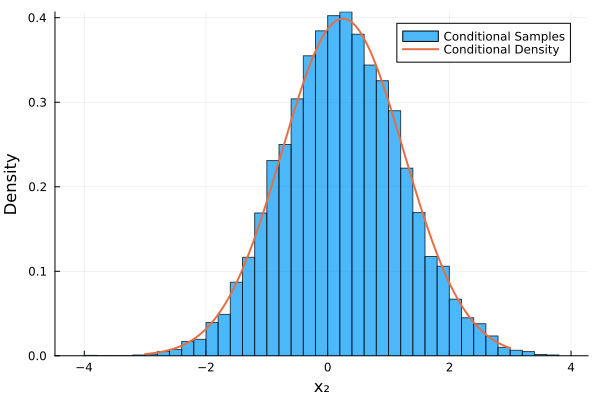

Conditional Densities
When constructing a transport map, the triangular structure of the Knothe-Rosenblatt rearrangement provides a systematic way to factorize the joint density into a product of conditional densities:
\[\pi(\boldsymbol{x}) = \pi(x_1) \pi(x_2 | x_1) \pi(x_3 | x_1, x_2) \cdots \pi(x_k | x_1, \dots, x_{k-1}).\]
In Refs. [1] and [2], the authors show that these conditional densities are obtained sequentially by inverting the map components after one another. We define a transport map as given in Getting Started with TransportMaps.jl.
The conditional density for $x_k$ given $x_1, \dots, x_{k-1}$ is defined as:
\[\pi(x_k | x_1, \dots, x_{k-1}) = \rho(z_k) \left| \frac{\partial {T_k}(z_k)}{\partial z_k} \right|^{-1},\]
where $z_k$ is obtained by inverting the first $k$ components of the map, i.e., $z_k = {T^k}(x_1,\dots,x_k)^{-1}$. Here, $\rho(z_k)$ represents the reference density, and $T_k$ is the $k$-th component of the triangular map.
Similarly, this allows us to sample from a conditional density $\pi(x_k | x_1, \dots, x_{k-1})$ by first inverting the map to get $z_k$, and then evaluating $x_k = T_k(z_1, \dots z_k)$.
Setting up a Transport Map
For this example, we'll use the banana distribution as our target density, which is also used in Getting Started with TransportMaps.jl and Banana: Map from Density. The banana distribution is defined as a:
\[\pi(x_1, x_2) = \phi(x_1) \cdot \phi(x_2 - x_1^2),\]
where $\phi$ is the standard normal PDF.
We load the packaged and define the banana density function and create a target density object:
using TransportMaps
using Plots
using Distributions
banana_density(x) = pdf(Normal(), x[1]) * pdf(Normal(), x[2] - x[1]^2)
target = MapTargetDensity(banana_density, :auto_diff)Define the map and quadrature; and optimize the map:
M = PolynomialMap(2, 2, :normal, Softplus(), HermiteBasis())
quadrature = GaussHermiteWeights(10, 2)
# Optimize the map:
optimize!(M, target, quadrature)Conditional Density Evaluation
Now we can compute conditional densities. For simplicity, we look at a two-dimensional example, so we are interested in the conditional density $\pi(x_2 | x_1 = 0.5)$.
Define the conditioning variable and the variable to evaluate the conditional density:
x₁ = 0.5
x₂ = 0.8
density = conditional_density(M, x₂, x₁)
println("Conditional density π(x₂=$x₂ | x₁=$x₁) = $density")Conditional density π(x₂=0.8 | x₁=0.5) = 0.34294385467960525Evaluate conditional density for multiple values:
x₂_values = range(-3, 3, length=100)
densities = conditional_density(M, x₂_values, x₁)Plot the conditional density:
plot(x₂_values, densities,
xlabel="x₂", ylabel="π(x₂ | x₁=$x₁)",
title="Conditional Density π(x₂ | x₁=$x₁)",
linewidth=2, label="Conditional Density")Conditional Sampling
We can also sample from the conditional density $\pi(x_2 | x_1)$. First, we sample $z_2$ in the standard normal space and then evaluate the conditional map:
Single value sampling:
z₂ = randn()
cond_sample = conditional_sample(M, x₁, z₂)
println("Conditional sample for z₂=$z₂: x₂=$cond_sample")Conditional sample for z₂=0.793935764055825: x₂=1.0439357609481916Multiple samples:
z₂_values = randn(10_000)
cond_samples = conditional_sample(M, x₁, z₂_values)Create a histogram of the conditional samples and overlay the analytical density:
histogram(cond_samples, bins=50, normalize=:pdf, alpha=0.7,
label="Conditional Samples", xlabel="x₂", ylabel="Density")
plot!(x₂_values, densities, linewidth=2,
label="Conditional Density")
Comparison with True Conditional Density
Let's compare our transport map's conditional density with the true conditional density of the target distribution:
True conditional density for the banana distribution:
function true_banana_conditional_density(x₂, x₁)
# For the banana distribution π(x₁, x₂) = N(x₁; 0, 1) * N(x₂ - x₁²; 0, 1)
# The conditional density π(x₂|x₁) = N(x₂; x₁², 1)
# This is a normal distribution centered at x₁² with variance 1
μ_cond = x₁^2
σ_cond = 1.0
return pdf(Normal(μ_cond, σ_cond), x₂)
endCompute true conditional densities:
true_densities = [true_banana_conditional_density(x₂, x₁) for x₂ in x₂_values]Plot comparison:
plot(x₂_values, densities, linewidth=2, label="TM Conditional",
xlabel="x₂", ylabel="π(x₂ | x₁=$x₁)")
plot!(x₂_values, true_densities, linewidth=2, linestyle=:dash,
label="True Conditional")
title!("Transport Map vs True Conditional Density")Multiple Conditioning Scenarios
Let's explore how the conditional density π(x₂ | x₁) changes as we vary x₁. This shows the nonlinear structure of the banana distribution:
x₁_values = [-0.6, 0.0, 1.0, 2.0]
p = plot(xlabel="x₂", ylabel="π(x₂ | x₁)",
title="Conditional Densities for Different x₁ Values")
for (i, x₁_val) in enumerate(x₁_values)
densities_cond = conditional_density(M, x₂_values, x₁_val)
true_densities_cond = [true_banana_conditional_density(x₂, x₁_val) for x₂ in x₂_values]
plot!(p, x₂_values, densities_cond, linewidth=2,
label="TM: x₁=$x₁_val", color=i)
plot!(p, x₂_values, true_densities_cond, linewidth=2, linestyle=:dash,
label="True: x₁=$x₁_val", color=i)
end
plot!(p)For a more comprehensive example with real-world applications, see the Biochemical Oxygen Demand (BOD) Example.
This page was generated using Literate.jl.